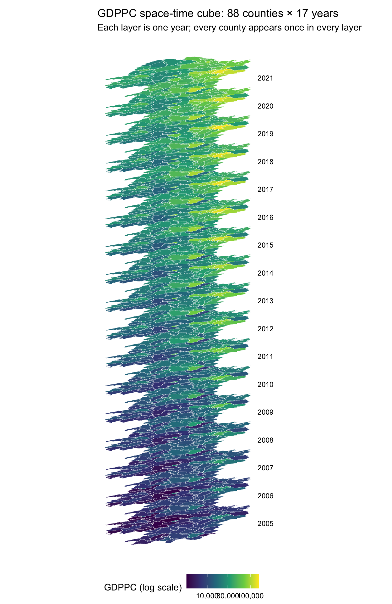
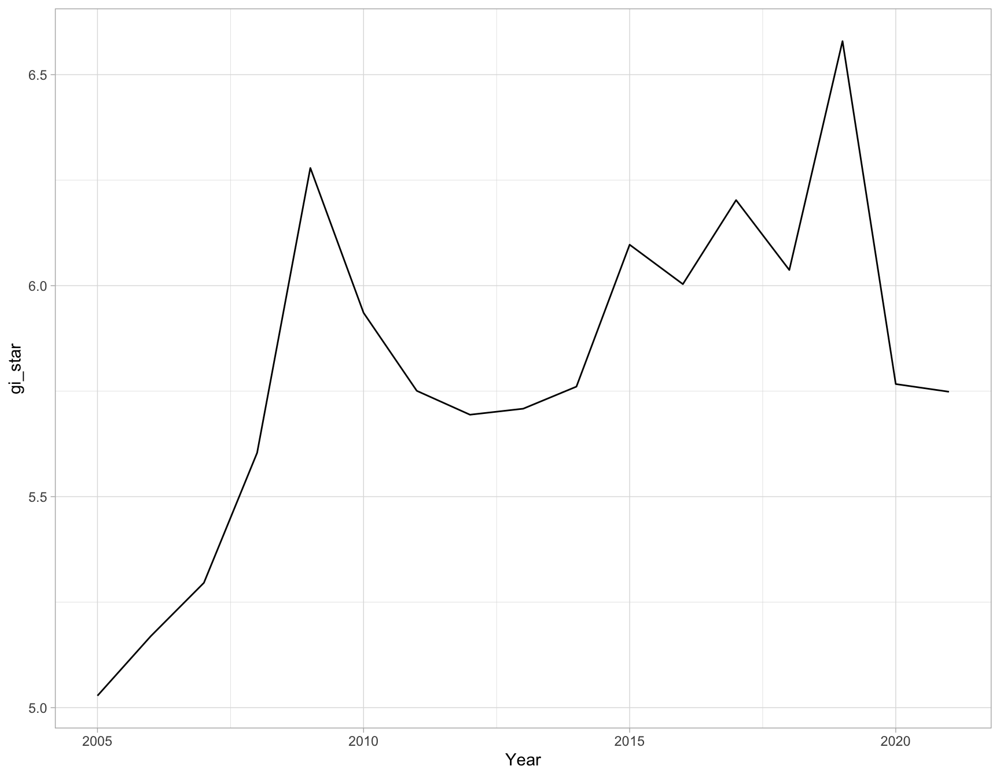
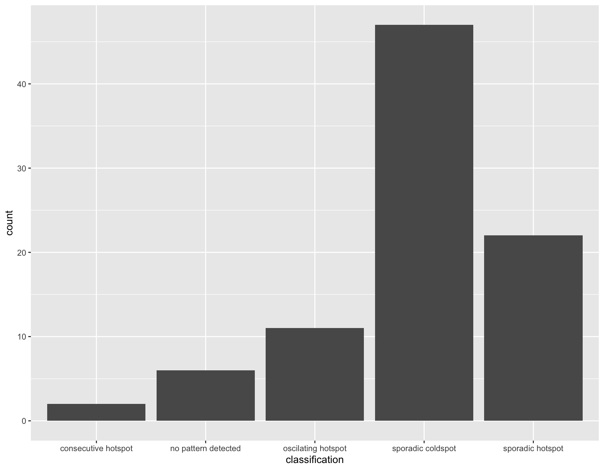
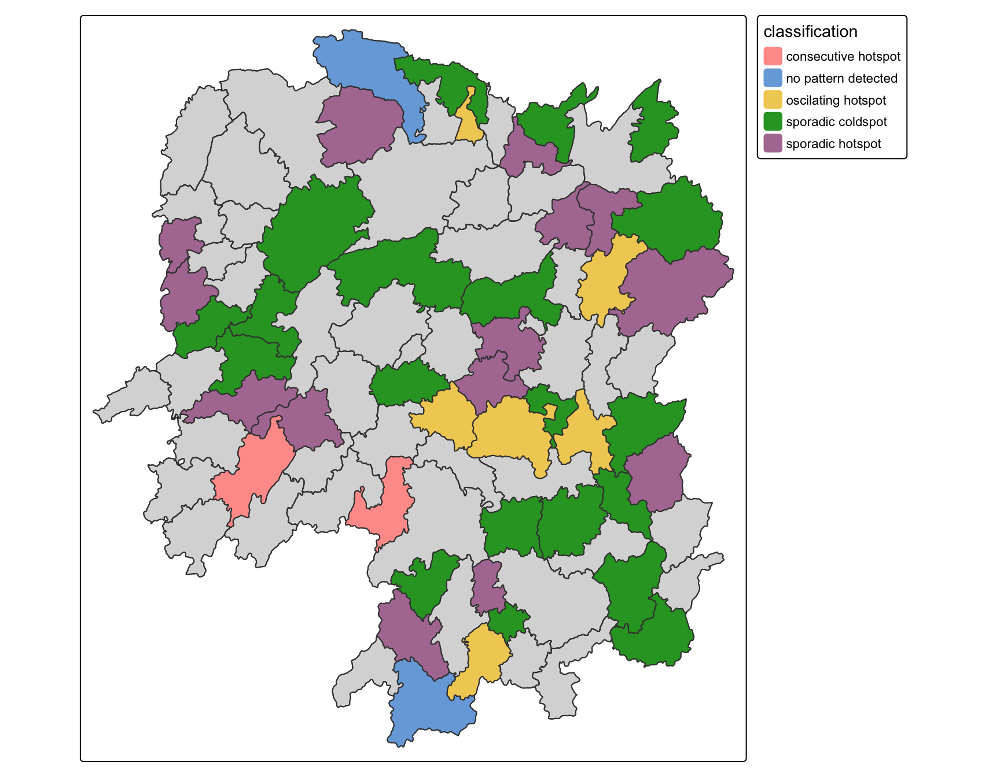

pacman::p_load(sf, sfdep, tmap, plotly, tidyverse, Kendall)In-class Exercise 6
Emerging Hot Spot Analysis with a Space-Time Cube
1 Getting started
1.1 Importing geospatial data
hunan <- st_read(
dsn = "data/geospatial",
layer = "Hunan",
quiet = TRUE) %>%
st_transform(crs = 32650)
NoteHow to check that the projection is in metres
EPSG:32650 is WGS 84 / UTM zone 50N, a projected coordinate system.
| Check | hunan after st_transform() |
Before, EPSG:4326 |
|---|---|---|
st_crs(hunan)$units_gdal |
"metre" |
"degree" |
- Coordinates in the hundreds of thousands or millions are metres. Coordinates below 180 are degrees.
1.2 Importing attribute table
GDPPC <- read_csv(
"data/aspatial/Hunan_GDPPC.csv")2 Creating a time series cube
GDPPC_st <- spacetime(GDPPC, hunan,
.loc_col = "County",
.time_col = "Year")
NoteThe four inputs of spacetime()
| Argument | Value | Description |
|---|---|---|
.data |
GDPPC |
the attribute table: one row per county per year |
.geometry |
hunan |
the county polygons, the coordinates of each location |
.loc_col |
"County" |
the location identifier, present in both tables, that links each row of GDPPC to a polygon in hunan |
.time_col |
"Year" |
the time column, 2005 to 2021 |
- Every spatial data set needs a location identifier. Here it is the county name, and the 88 names in
GDPPCandhunanmatch exactly. - The time interval must be the same for every location.
is_spacetime_cube(GDPPC_st)[1] TRUE2.1 Visualising the space-time cube

years <- sort(unique(GDPPC$Year))
hunan_flat <- st_geometry(hunan) |> st_set_crs(NA)
tilt <- matrix(c(1, 0.5, 0, 0.3), 2, 2)
layer_gap <- 120000
cube <- map(seq_along(years), \(i) {
st_sf(County = hunan$County, Year = years[i],
geometry = hunan_flat * tilt + c(0, (i - 1) * layer_gap))
}) |>
bind_rows() |>
left_join(GDPPC, by = c("County", "Year"))
year_labels <- tibble(
Year = years,
x = st_bbox(cube)[["xmax"]] + 30000,
y = mean(st_bbox(hunan_flat * tilt)[c("ymin", "ymax")]) +
(seq_along(years) - 1) * layer_gap)
ggplot(cube) +
geom_sf(aes(fill = GDPPC), colour = "white", linewidth = 0.05) +
geom_text(data = year_labels, aes(x, y, label = Year),
hjust = 0, size = 3) +
scale_fill_viridis_c(trans = "log10", labels = scales::comma,
name = "GDPPC (log scale)") +
labs(title = "GDPPC space-time cube: 88 counties × 17 years",
subtitle = "Each layer is one year; every county appears once in every layer") +
coord_sf(clip = "off") +
theme_void() +
theme(legend.position = "bottom",
plot.margin = margin(5, 40, 5, 5))3 Computing Gi*
3.1 Deriving the spatial weights
GDPPC_nb <- GDPPC_st %>%
activate("geometry") %>%
mutate(nb = include_self(
st_contiguity(geometry)),
wt = st_inverse_distance(nb,
geometry,
scale = 1,
alpha = 1),
.before = 1) %>%
set_nbs("nb") %>%
set_wts("wt")
NoteWhy activate() comes first, and why include_self()
GDPPC_st holds two linked tables. The link is a dynamic join on County: no merged 1,496-row table with geometry is built.
| Context | Rows | Holds |
|---|---|---|
"data" (active after spacetime()) |
1,496 | one row per county per year: Year, County, GDPPC |
"geometry" |
88 | one polygon per county |
activate("geometry")switches to the 88 polygons, so the neighbours and weights are calculated once per county from the geometry layer only. Without it,mutate()runs on the data context, which has no geometry, and fails withobject 'geometry' not found. Always activate the geometry before calculating on it.activate()is from sfdep.st_contiguity()gives the neighbour listnb, as in Hands-on Ex 5.st_inverse_distance(nb, geometry, scale = 1, alpha = 1)gives each neighbour the weight 1 / (distance / scale)^alpha, so nearer neighbours count more.scale = 1andalpha = 1leave the distance unchanged (the defaultscaleis 100)..before = 1puts the newnbandwtcolumns in front of the existing columns.set_nbs("nb")andset_wts("wt")copynbandwtto every year, so every row of the 1,496-row data context always has these two fields.- Gi* includes the county’s own value with its neighbours’ values (Gi excludes it).
include_self()adds each county to its own neighbour list.
3.2 Computing local Gi* for each year
gi_stars <- GDPPC_nb %>%
group_by(Year) %>%
mutate(gi_star = local_gstar_perm(
GDPPC, nb, wt)) %>%
unnest(gi_star)
NoteWhy unnest() is needed
local_gstar_perm() returns ten results for every county-year. mutate() stores them all in a single column, gi_star, as a packed table. unnest(gi_star) spreads them into ten columns.
Without unnest() |
With unnest(gi_star) |
|
|---|---|---|
| Rows | 1,496 | 1,496 |
| Columns | 6: Year, County, GDPPC, nb, wt, gi_star |
15 |
gi_star |
one packed column holding all ten results | the Gi* value only, a number |
| Other results | hidden inside gi_star |
cluster, e_gi, var_gi, std_dev, p_value, p_sim, p_folded_sim, skewness, kurtosis |
- Without
unnest(),gi_starcannot be mapped, filtered or tested as a number, andp_simis not available for the significance filter. group_by(Year)computes Gi* separately for each of the 17 years, using the same neighbours and weights in every year.unnest()is from tidyr, whichtidyverseloads, so the chapter’stidyr::prefix is not needed.
4 Mann-Kendall test
4.1 Mann-Kendall test on Gi*
cbg <- gi_stars %>%
ungroup() %>%
filter(County == "Changsha") |>
select(County, Year, gi_star)ggplot(data = cbg,
aes(x = Year,
y = gi_star)) +
geom_line() +
theme_light()
NoteTaking out one county to show how its Gi* changes
gi_stars already has a Gi* value for every county in every year. To show how one area of interest changes, take that county out as its own small data frame:
| Step | Code | Result |
|---|---|---|
| 1 | ungroup() |
gi_stars is still grouped by Year, 17 groups; this makes it one plain data frame |
| 2 | filter(County == "Changsha") |
the area of interest only: 17 rows, one per year |
| 3 | select(County, Year, gi_star) |
only the columns the plot needs |
- The result,
cbg, is one data frame of 17 rows and 3 columns, ready forggplot():Yearon the x-axis,gi_staron the y-axis. - Without
ungroup(),cbgstays grouped byYear, so each group holds one value and the Mann-Kendall test in the next step fails withlength(x)<3. - There is no need to plot every county. After EHSA gives every county a class, take one sample county per class and plot its Gi* series. The shape of the line explains the label: a series that stays positive and keeps rising for an intensifying hot spot, a series that crosses zero back and forth for an oscillating hot spot.
4.2 Interactive Mann-Kendall plot
p <- ggplot(data = cbg,
aes(x = Year,
y = gi_star)) +
geom_line() +
theme_light()
ggplotly(p)
NoteFrom a static plot to an interactive one
| Step | Code | Result |
|---|---|---|
| 1 | p <- ggplot(...) |
the same ggplot as above, stored in the object p (class ggplot) and not printed |
| 2 | ggplotly(p) |
plotly converts p into an interactive chart |
- There is no need to create both plots. Make the interactive one only:
ggplotly(p)already contains the static line. - The reason for the interactive version: on the static plot, the year and Gi* value of a point can only be estimated from the axes. Hovering over the interactive line shows the exact
Yearandgi_star, to analyse a specific year, such as the year a peak or a drop occurs. The chart can also be zoomed and panned. ggplotly()is from plotly, loaded at the start withp_load().
4.3 Mann-Kendall test for every county
ehsa <- gi_stars %>%
group_by(County) %>%
summarise(mk = list(
unclass(
Kendall::MannKendall(gi_star)))) %>%
unnest_wider(mk)
head(ehsa)# A tibble: 6 × 6
County tau sl S D varS
<chr> <dbl> <dbl> <dbl> <dbl> <dbl>
1 Anhua 0.191 0.303 26 136. 589.
2 Anren -0.294 0.108 -40 136. 589.
3 Anxiang 0 1 0 136. 589.
4 Baojing -0.691 0.000128 -94 136. 589.
5 Chaling -0.0882 0.650 -12 136. 589.
6 Changning -0.750 0.0000318 -102 136. 589.emerging <- ehsa %>%
arrange(sl, abs(tau)) %>%
slice(1:10)
head(emerging)# A tibble: 6 × 6
County tau sl S D varS
<chr> <dbl> <dbl> <dbl> <dbl> <dbl>
1 Shuangfeng 0.868 0.00000143 118 136. 589.
2 Xiangtan 0.868 0.00000143 118 136. 589.
3 Xiangxiang 0.868 0.00000143 118 136. 589.
4 Chengbu -0.824 0.00000482 -112 136. 589.
5 Dongan -0.824 0.00000482 -112 136. 589.
6 Wugang -0.809 0.00000712 -110 136. 589.
NoteReading the Mann-Kendall table
ehsa has 88 rows, one per county: the test runs on each county’s 17 Gi* values. Open it in RStudio to see all the columns.
| Column | Meaning |
|---|---|
tau |
the test statistic, Kendall’s tau, from −1 (always falling) to 1 (always rising) |
sl |
the p-value (two-sided) |
S |
the score: year pairs where Gi* rose minus pairs where it fell |
D |
the largest possible score, 17 × 16 / 2 = 136, so tau = S / D |
varS |
the variance of S, used with S to construct the p-value |
- To interpret:
sl< 0.05 means a significant trend, and the sign oftaugives its direction. arrange(sl, abs(tau))sorts the most significant counties first;slice(1:10)keeps the top ten. 42 of the 88 counties are significant at 0.05: 20 with a rising Gi* and 22 with a falling one.- More important:
emerging_hotspot_analysis()in the next section runs the same Gi* and Mann-Kendall steps for every county, with a permutation simulation for Gi*, and then assigns each county an emerging hot spot class.
5 Performing emerging hot spot analysis
ehsa <- emerging_hotspot_analysis(
x = GDPPC_st,
.var = "GDPPC",
k = 1,
nsim = 99
)5.1 Visualising the distribution of EHSA classes
ggplot(data = ehsa,
aes(x = classification)) +
geom_bar()
5.2 Visualising EHSA
hunan_ehsa <- hunan %>%
left_join(ehsa,
by = join_by(County == location))ehsa_sig <- hunan_ehsa %>%
filter(p_value < 0.05)
tmap_mode("plot")
tm_shape(hunan_ehsa) +
tm_polygons() +
tm_borders(fill_alpha = 0.5) +
tm_shape(ehsa_sig) +
tm_fill("classification") +
tm_borders(fill_alpha = 0.4)
NoteThe significant classes on the map
- Only the counties whose
p_value(the Mann-Kendall p-value of the Gi* trend) is below 0.05 are coloured; the grey counties are not significant. - The significant counties fall into several classes, a mix of hot spot and cold spot classes. The classes, their counts and their colours change from run to run (four to seven classes in our runs), because
nsim = 99is a random permutation and no seed is set. Read the legend, not the colour. - Counties labelled no pattern detected have a significant Gi* trend, but their series does not match any of the defined patterns below.
5.3 Interpretation of EHSA classes

NoteWhy a county becomes a consecutive hot spot
A class is assigned by matching a county’s yearly Gi* series against the definitions in the table above. To see why a county has its label, take its series and check it year by year.
Consecutive hot spot, from the table: a single uninterrupted run of significant hot spot years at the end of the period, no significant hot spot year before that run, and fewer than 90% of the years significant.
emerging_hotspot_analysis() counts a year as a significant hot spot when Gi* > 0 and p_sim ≤ 0.01 (its threshold, 0.01, not 0.05). Linxiang, one run with set.seed(1):
| Years | Gi* | p_sim |
Significant hot spot? |
|---|---|---|---|
| 2005 to 2019 | −0.12 to 0.83 | 0.02 to 0.49 | no: p_sim above 0.01 in every year |
| 2020 | 1.33 | 0.01 | yes |
| 2021 | 1.59 | 0.01 | yes |
- The run of 2020 and 2021 is uninterrupted and ends in the final year.
- No year before 2020 is a significant hot spot.
- 2 of 17 years, 12%, are significant, fewer than 90%. All three conditions hold, so Linxiang is a consecutive hot spot.
- The Gi* used here is EHSA’s own:
include_self(st_contiguity())with row-standardised weights and one time lag (k = 1), returned withinclude_gi = TRUE. It differs fromgi_starsin the earlier section, which uses inverse distance weights.